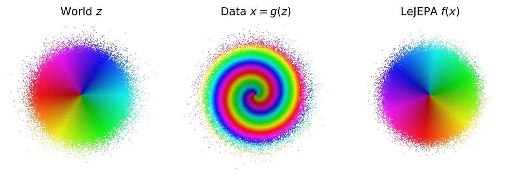
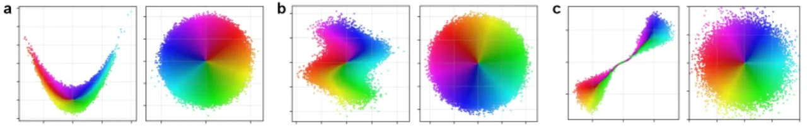
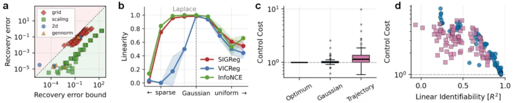
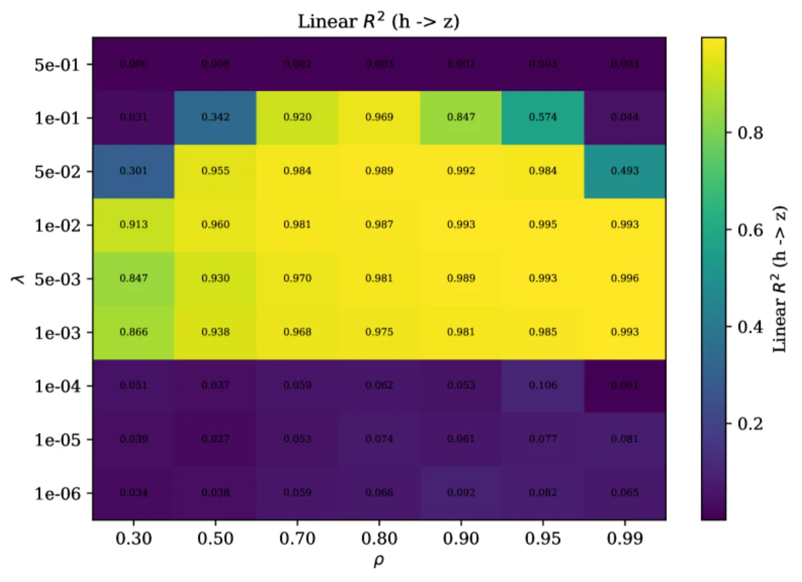
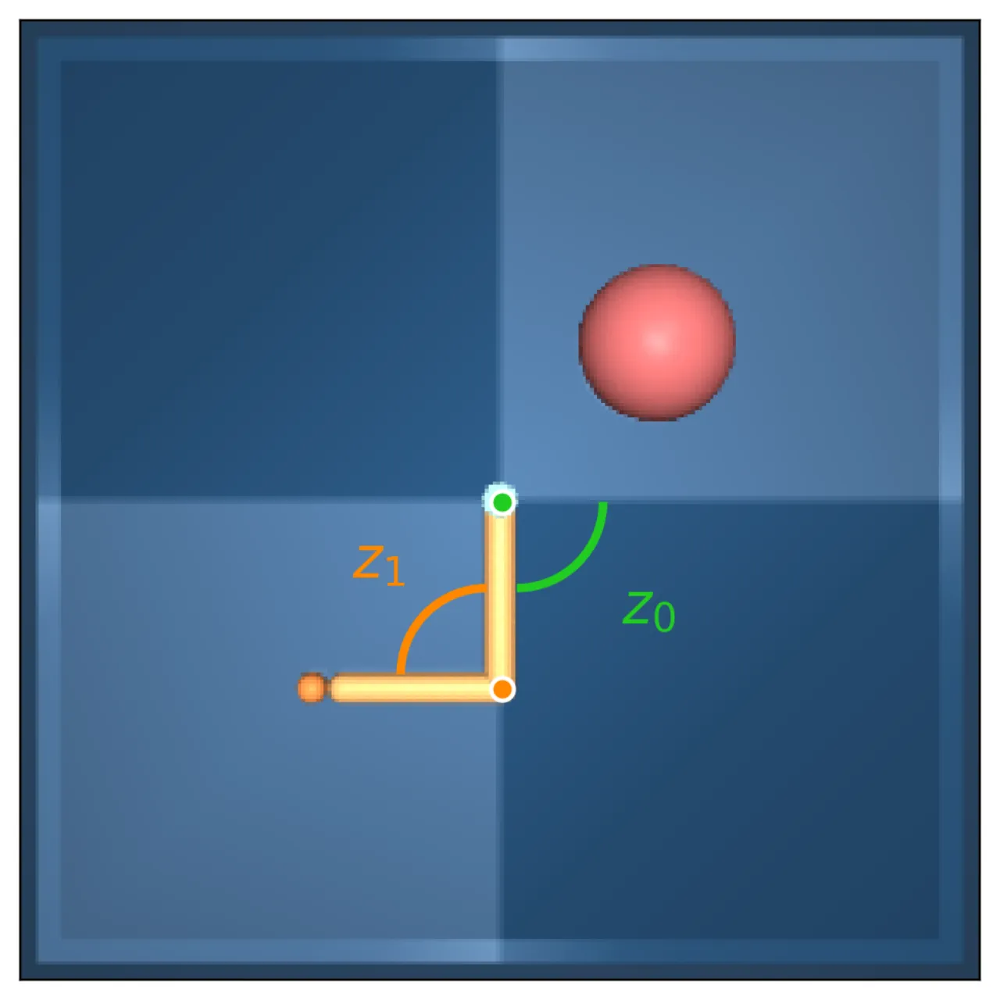
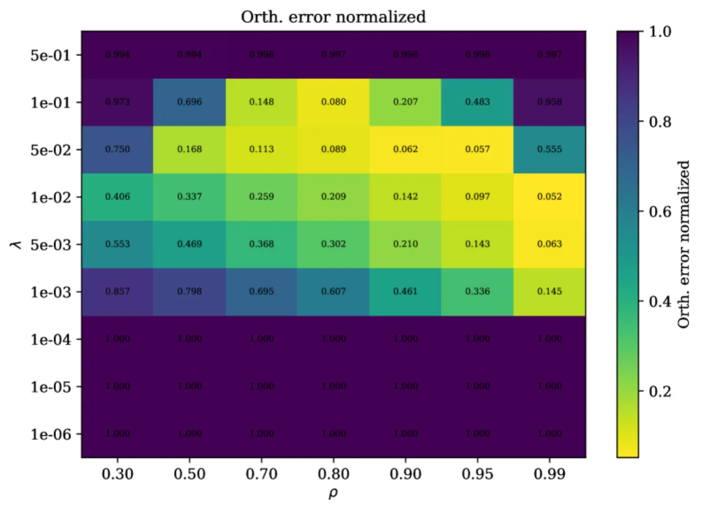
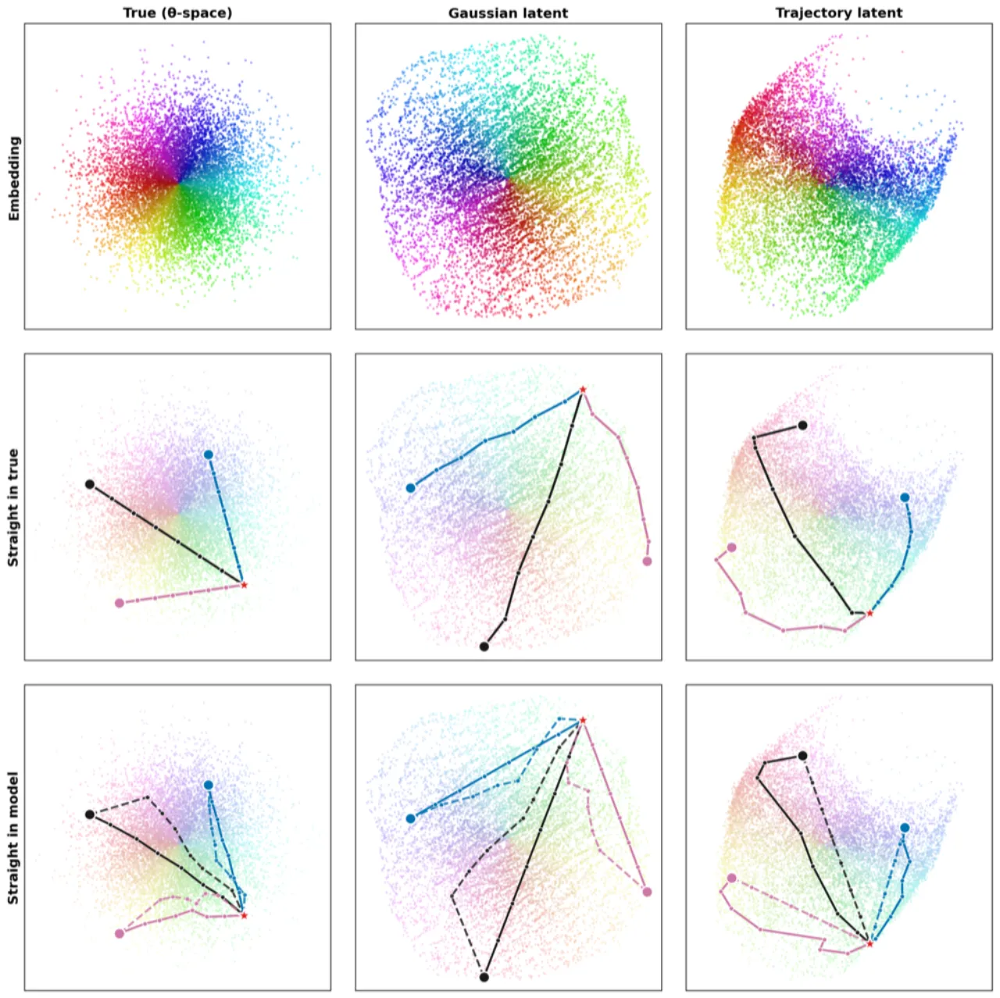

本文为 Joint-Embedding Predictive Architectures（JEPA）建立首个可识别性保证：在潜变量服从高斯分布的广泛世界类中，LeJEPA（对齐损失 + 高斯正则化）可从非线性观测中线性恢复真实潜变量，且高斯分布是使该保证成立的唯一潜变量分布。
自监督学习（SSL）的愿景在于无需标注数据即可学到有用的世界表示。Joint-Embedding Predictive Architectures（JEPAs）通过训练表示使同一输入的相关视图产生相似嵌入，并辅以正则化防止塌缩。然而一个更深层的问题悬而未决：何时学到的表示才是"世界模型"——即对世界潜在结构的忠实映射？
"A representation that scrambles the true degrees of freedom of the world cannot support reliable planning or compositional generalization."
——论文原文
每当通过 linear probing 评估表示质量时，隐含的问题正是：模型是否学到了潜变量的线性表示？没有线性可识别性（linear identifiability），线性探针就无法精确恢复潜变量。本文正是要给出这一性质的严格数学保证。

论文从理论角度分析 LeJEPA：在满足独立性、平稳性、加性噪声三条假设的"世界"类中，证明带高斯正则化的对齐目标可线性恢复高斯潜变量，并给出近似可识别性界和最优规划保证。

设世界潜变量 z ∈ ℝⁿ 通过未知非线性映射 g 生成观测 x = g(z)。论文对世界施加三条假设：
在高斯潜变量世界中，满足上述假设的唯一转移为 Ornstein–Uhlenbeck（OU）过程：
z′ = ρz + √(1−ρ²)η，η ∼ N(0,Iₙ)，η ⊥ z
其中 ρ ∈ (0,1) 控制视图间相关性。
编码器 h = f∘g: ℝⁿ → ℝⁿ 通过最小化如下目标训练：
minh L(h) = 𝔼[‖h(z′) − h(z)‖²] s.t. h(z) ∼ N(0, Iₙ)
= 对齐损失（Alignment） + 高斯性约束（Gaussianity / SIGReg）
在白化（Cov(h(z)) = Iₙ）条件下，目标化简为最大化正样本对相关之和：L(h) = 2n − 2Σᵢ 𝔼[hᵢ(z′)hᵢ(z)]。
对于高斯世界，设 h: ℝⁿ→ℝⁿ 满足 h(z)∼N(0,Iₙ)，则 L(h) ≥ 2(1−ρ)n，等号成立当且仅当 h(z) = Qz，其中 Q ∈ O(n)（正交矩阵）。证明关键：Hermite 多项式分解使每个非线性度 d≥2 受到严格惩罚，线性映射是唯一最优解。
在满足三条假设的所有世界中，若对齐约束加白化的唯一最小化器是线性映射 h(z) = Qz，则 z 必须是高斯分布。证明借助 Sturm–Liouville 谱理论，排除了全部非高斯替代方案。
设近似对齐间隙为 δ，近似白化误差为 ε，令 D = δ / (2ρ(1−ρ))。则存在 Q ∈ O(n) 使得：
𝔼[‖h(z) − Qz‖²] ≤ D + (ε + D)²
恢复误差随 δ、ε 连续平滑退化。
设 h(z) = Qz（Q ∈ O(n)），对任意旋转不变代价函数的有限水平最优控制问题，有 V̂*(h(z₀)) = V*(z₀)，即在学到的潜空间与真实潜空间中规划等价。

实验涵盖：2D 非线性混合验证、维度扩展性（N=2→1024）、分布消融（广义正态族）、DMC Reacher 机器人像素控制。基线方法：SIGReg、VICReg、InfoNCE。评估指标：线性可识别性 R²（h→z 及 z→h）。
共享 RealNVP 混合与匹配编码器，5 种随机种子，均值 ± 标准差：
| 潜变量维度 N | SIGReg R²(h→z) | VICReg R²(h→z) | InfoNCE R²(h→z) |
|---|---|---|---|
| 2 | 0.999998 ± 3.4e-6 | 0.999996 ± 8.4e-6 | 0.950961 ± 1.6e-3 |
| 64 | 0.999966 ± 7.4e-6 | 0.999968 ± 8.1e-6 | 0.648496 ± 3.1e-2 |
| 256 | 0.999884 ± 7.9e-6 | 0.999889 ± 7.2e-6 | 0.696587 ± 4.9e-3 |
| 512 | 0.999775 ± 6.7e-6 | 0.999785 ± 6.9e-6 | 0.704393 ± 2.6e-3 |
| 1024 | 0.999561 ± 1.2e-5 | 0.999582 ± 1.1e-5 | 0.720241 ± 2.0e-3 |
结论：SIGReg 和 VICReg 在 N=1024 时仍维持 R²>0.999；InfoNCE 在固定核宽 σ=1 下随维度增大明显退化。
| 数据类型 | 相关系数 ρ | R²(z→h) | R²(h→z) |
|---|---|---|---|
| OU（高斯正样本对） | 0.30 | 0.67 ± 2e-2 | 0.67 ± 2e-2 |
| OU（高斯正样本对） | 0.90 | 0.95 ± 7e-4 | 0.95 ± 7e-4 |
| OU（高斯正样本对） | 0.99 | 0.95 ± 4e-4 | 0.95 ± 4e-4 |
| RL 轨迹（非高斯） | stride δ=1 | -0.39 ± 1e-1 | 0.71 ± 3e-2 |
| RL 轨迹（非高斯） | stride δ=64 | 0.44 ± 4e-2 | 0.55 ± 3e-2 |
结论：高斯 OU 数据对下，R² 随 ρ 单调上升；RL 策略轨迹因各向异性（ρ₀ ≠ ρ₁）和非高斯转移导致可识别性显著下降，与理论预测一致。



对广义正态分布族（generalized normal family，形状参数 α）进行扫描：线性恢复 R² 在 α=2（高斯）处达到尖锐峰值，SIGReg 和 InfoNCE 对重尾潜变量比 VICReg 拥有更宽的平坦区。这与定理 5.2 的"高斯唯一性"完全吻合。
三种非线性混合（抛物线剪切、正弦剪切、RealNVP 耦合层）：学到的表示将各非线性混合逆转至旋转等价，与定理 5.1 一致。网格搜索显示：过强的高斯性（λ=0.5）会压缩表示，最优恢复在 低 λ + 高 ρ 时出现。

高斯分布是给定均值与协方差情况下最大熵分布，是最少假设的先验。然而从观测数据中无法验证真实潜变量是否高斯。有一个尺度论据：单个微观变量可能非高斯，但任务相关的潜变量往往是大量微观变量的聚合，中心极限定理倾向于使其趋向高斯。尽管如此，这一假设本质上无法从观测中证伪。
定理假设编码器输出维度 m 等于真实潜变量维度 n（m=n）。当 m<n 时，高斯性约束不能确定选取哪个子空间；当 m>n 时，多余维度必须塌缩或编码冗余。理解维度不匹配对可识别性的影响是一个重要的开放问题，对 JEPA 实践设计有直接影响。
理论结果是关于全局最优的总体水平（population-level）陈述。定理 5.3 证明保证随对齐间隙和协方差偏差连续退化，但未说明这些量如何随样本量或训练动态缩放。实验中观察到少量界违反情况（图 4a），与 ε 和 δ 的有限样本估计噪声一致。
本理论针对编码器学习，未涉及动作条件下的动态学习（action-conditioned dynamics），这是将 LeJEPA 从表示学习扩展到完整世界模型学习的重要后续方向。